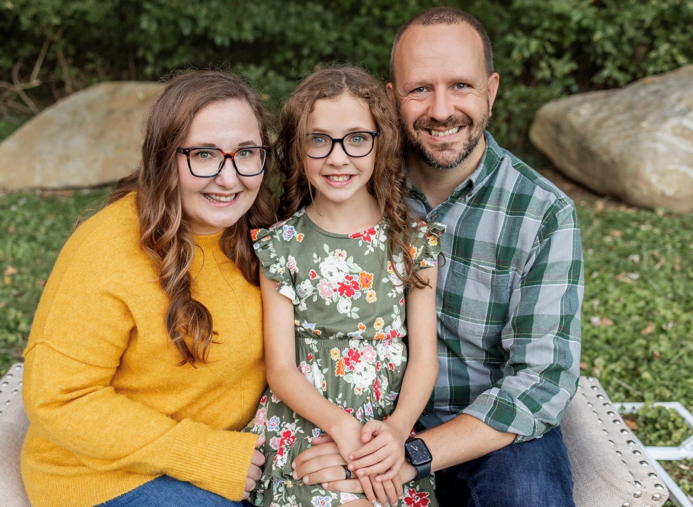

Thomas Morris
Summary
Analytically-driven Software Engineer with 7+ years of experience focusing on building web-based and
Java applications. Highly adaptable and dedicated to producing error-free code, beautiful applications, and
great user experiences.
Education:
-
Masters of Science, Computer Science, Colorado Technical University
-
Bachelors of Science, Computer Science, University of Maryland University College
Skills:
-
Leadership/Project Management
-
Software Development
-
Java
-
JavaScript
-
Python
-
HTML and CSS
-
Linux/Unix OS
-
Hardware Management
Work Experience:
-
November 2018 - Present: JHU/APL, Software Engineer
-
Developed new plugins that would be used to process various data types from surface ships, which would be used to aid in the reconstruction of at-sea events. Also developed a tool that could calculate metrics for additional at-sea events. The data generated from this tool could be used to evaluate system and operator performance.
-
Established and tested procedures that would allow various tactical systems the ability to play acoustic data from different classification levels. These procedures will limit the need for APL personnel to travel offsite to conduct data reconstruction.
-
Created various wiki pages that will aid in the tracking of monthly accomplishments and tasking priorities. The wiki pages make it easier to project managers to add and remove tasking as needed, as well as to see progress on specific tasking.
-
Planned and initiated the installation of a new tactical string within APL. This tactical string will provide the analyst with the ability to playback data from a greater number of platforms, as well as limit the need to travel offsite.
-
November 2017 - November 2018: Booz Allen Hamilton, Software Engineer
-
Developed a method for transferring JSON formatted data, to an external client via a REST endpoint.
-
Used JUnit and EasyMock to develop a comprehensive set of unit test, which are implemented prior to integration testing.
-
Developed a comprehensive set of test cases using the Selenium software package, which was used to test the following features of a web application; functionality, usability, interface, compatibility, performance, and security.
-
April 2017 - October 2017: Zenetex, Software Engineer/Web Developer
-
Develop lessons for naval personnel that involves general science and underwater acoustics. Each lesson contains test questions that builds upon the material of each lesson.
-
Lessons are developed with HTML5 and then CSS and JavaScript is used in order to implement various levels of animations and design.
-
Student data and lessons are stored in a SQL database that gets updated with each delivery.
-
March 2016 - March 2017: ITEC, Software Engineer
-
Developed a Java based application on both Windows and Solaris, for the distribution to remote sites.
-
The Java application allows users to stream various data types through the implementation of SOAP and REST web services, to users at each location.
-
Development of the Java application is accomplished using the Agile methodology, in which task are assigned from a pool of reported bugs, each of which is maintained through Bugzilla.
-
Prior to the quarterly release of the application, extensive testing is executed on Windows, Solaris, and Sparc machines. Testing is done in order to verify that the bugs were properly fixed and that the application will properly run once distributed.
-
Application distributed was accomplished by creating an SSH connection via PuTTY and following a set of very strict installation guidelines, forced the user to stop and start cluster services, as well as ensuring that ActiveMQ messaging has been activated.
-
December 2012 - March 2016: United States Navy/Office of Naval Intelligence, Acoustic Analyst/Java Developer
-
Maintained and distributed a Java based application that stores various data elements within in XML file and a SQLite Database.
-
The Java application allows users to study various underwater acoustic signatures, in order to improve contact recognition, and also allows trainers to setup either individual or networked test scenarios.
-
Maintained a website through the use of HTML and CSS technologies. The site is available to naval personnel, and holds acoustic data for various platforms.
-
Developed and implemented a Master Software Test Evaluation Plan, which was used to test the Java application, prior to its release to the fleet.
-
Instrumental in the development of acoustic detection algorithms, through the use of anomaly detection, and utilizing underwater acoustic sensors.
-
April 2008 - December 2012: United States Navy/USS The Sullivans DDG 68, Computer Technician/Acoustic Analyst
-
Completed over 100 hours of troubleshooting and repair to three major computer system casualties while deployed to the Persian Gulf
-
Performed in-depth electronics repairs by diagnosing system faults, and replacing faulty components by soldering new components in-place.
-
Managed a team of 16 personnel in the execution of two live, multinational exercises while deployed to the Mediterranean Sea.
-
Conducted 42 live boarding of foreign watercraft, while deployed to the Persian Gulf, as part of the Visit, Board, Search and Seizure team.